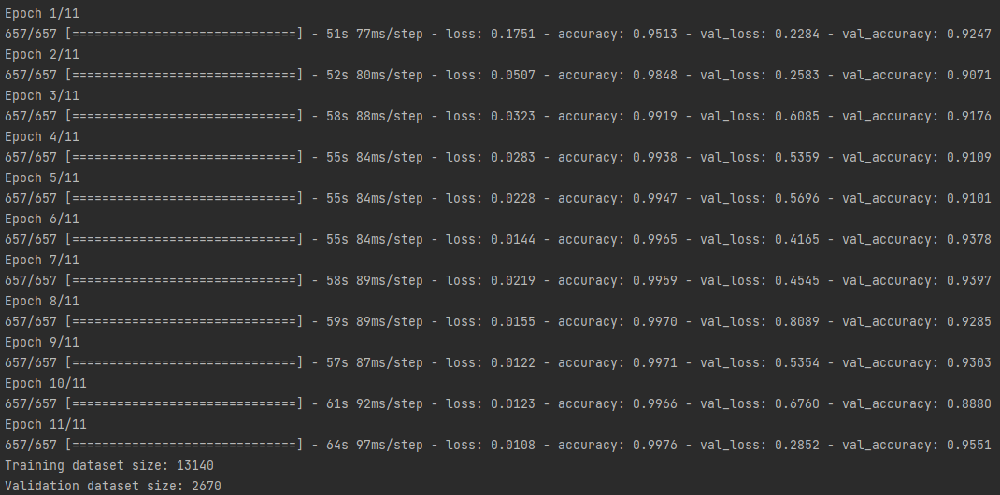

VUT-FIT SUR projekt
xgalba03, xpomyk04
Pro vytvoření modelu klasifikátoru obličeje jsme se rozhodli využít konvoluční neuronovu síť, která má následující strukturu.
Tento model je implementován a natrénován pomocí rozhraní keras, který pracuje nad frameworkem tensorflow (framework pro práci s n. sítěmi). Implementace modelu je ve zdrojovém souboru img_class_nn.py
Data která dostupná pro trénování se skládají z:
Tyto data jsou postupně načteny pomocí knihovny cv2, převedeny a převedeny do RGB formátu. Při načítání datasetu je z každého obrázku syntetizováno pomocí transformací několik dalších (knihovna albumentations). Tímto dojde k rozšíření datasetu. až na 13140 trénovacích dat a 2670 validačních dat. Obrázky jsou uloženy jako pole (80x80x3) matic s hodnotami normalizovanými do rozsahu (0-1) pro rychlejší zpracování neuronovou sítí.
Neuronová síť je trénována pomocí batchů o velikosti 20 na 11 epoch. Dosažené kvality neuronové sítě na validačních datech je možno vidět na následujicím obrázku.

Při testování na jednotlivých obrázích jsem zjistil že klasifikátor funguje celkem pěkně, ale někdy se "sekne" a označí jako target osobu non-target data s velkou pravděpodobností (>0.9). Bohužel se mi toto nepodařilo nijak vyřešit. Hard decision práh pro klasifikaci jsem experimentélně určil na 0.9 (pro target) tak že > 0.9 -> hard decision = 1
Klasifikátor rečových dát vo formáte .wav bol implementovaný pomocou Gaussian Mixture Modelu (GMM) vyuýívajúceho EM algoritmus na jednotlivé ktorý výpočtu
Štruktúra zdrojového kódu: -načítanie vstpuných dát na trénovanie a klasifikáciu -vytvorenie MFCC koeficientov z dát a ich transponovanie a uloženie do dátovej štruktúry -určenie vstupných koeficientov GMM modelu (prebieha náhodne) -iterácia EM algoritmu pokiaľ dáta neskonvergujú -využitie natrénovaných koeficientov na odhadnutie/určenie klasifikácie testovacích dát -uloženie výsledkov do súboru .txt
Pri prehodnotení hodnôt vyplívajúcih z GMM boli hodnoty prevedené do intervalu 0-100. Kvôli veľkému rozsahu pôvodných hodnôt bol testovaním učený prah pozitívnej klasifikácie na hodnotu 0.98. (hard decision)
Řešení produkuje celkem 3 result soubory, jeden pouze ze zpracování png, druhý ze zpracování wav a třetí z kombinace zpracování png a wav souboru.
image_CNN.txt - soubor s výsledky ze zpracování png souborů (spuštění skriptu img_class_nn.py). Skript očekává složku s trénovacímí daty ve stejném adresáři. Pro spuštění skriptu je třeba nejprve doinstalovat všechny moduly, které potřebuje pomocí 'pip -install'
audio_GMM.txt - súbor s výsledkami hodnotenia audio nahrávok, vytvára sa pomocou spustenia skriptu audio_GMM.py a očakáva zložku testovacích dát s názvom 'eval' v rovnakom adresári ako zdrojový kód. Trénovacie dáta sa nachádzajú v zložke train_data/
results.txt - súbor obsahujúci výsledky z kombinovanej klasifikácie - audio + obrázok. Pre vyhodnotenie úspešnej klasifikácie musí násobok pravdepodobností dielčich skriptov dosahovať hodnotu 89% - 0.89